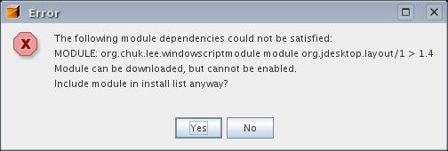

About ScriptEngine
Scripting languages are popular (probably an
understatement). JavaSE 6 (aka Mustang) will have first-class support
for scripting languages. There is already a project at scripting.dev.java.net
that have quite a few scripting engines for Mustang.
NetBeans
is a top notch IDE. However to extend NetBeans, you have to resort to
writing modules. People may what to invest time and energy into a hack
and slash project like my recent FIFA World Cup module (Go England!
Latest - England went.).
NetBeans current has a project call Coyote
that adds scripting languages support. But from Coyote's website, there
is no mention of scripting NetBeans itself. So I've decide to add
support for scripting into NetBeans.
Bear
in mind that this module is stricly experimental. There are a lot of
concepts that are not fully developed. The idea of this scrpting module
is to perform most NetBean stuff (eg. creating a Editor TopCompont) but
not to the level of the OpenIDE
API.
Still interested? Here is what you need to do:
- Download and install Mustang.
I've only tested this with build 89 and on Solaris/Linux only. YMMW on
Windows.
- Install the excellent NetBeans 5 and all the related
patches or updates. IMPORTANT
The ScriptEngine Module is developed on the beta release of Matisse.
You have to update NetBeans for this module to work. If you see this
while trying to install the ScriptingEngine, it means that you have yet
to update NetBeans to the beta version of Matisse

OTOH, if you are reading this, it means that you have successfully installed the module, so the warning is moot.
- Startup
NetBeans in Mustang. This is essential. There are 2 ways of doing this:
either change $NETBEANS_HOME/etc/netbeans.conf or use the --jdkhome
switch. Since the module is experimental, I would also like to
encourage you to use the --userdir switch as well.
- Install the script engine and window system module which
you probably have.
- Install the example scripts.
You can unzip this in any directory.